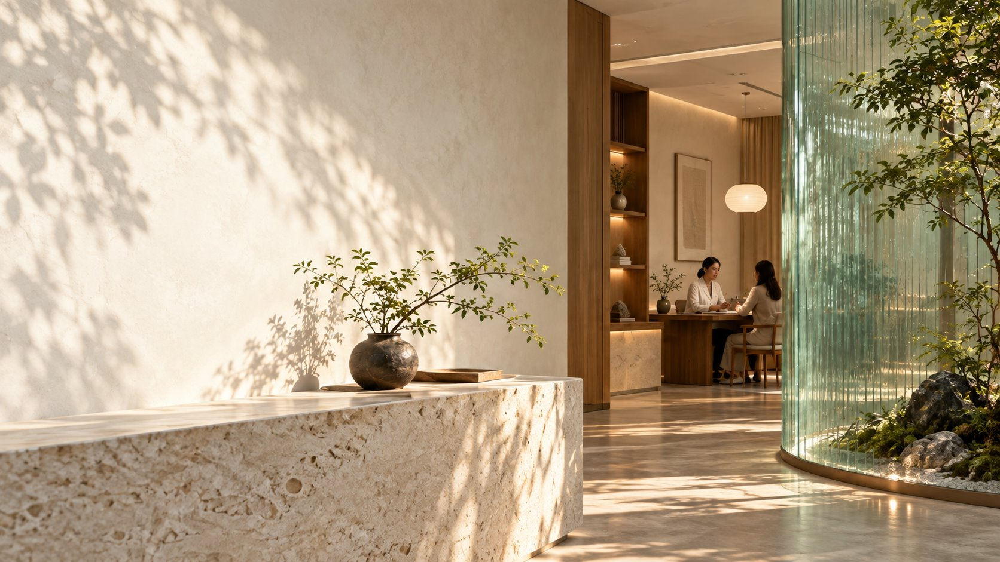

一人一案从你的具体情况出发

CONTEMPORARY CHINESE MEDICINE
看见身体的细微，
照顾生活的长久。
从一次认真倾听开始，找到适合你的就诊与调理路径。
AI 就诊助手 · 咨询与预约指引
四诊合参由医师综合判断
持续随访让每一步都有回应
 门诊沟通场景示意 · 非医师个人肖像
门诊沟通场景示意 · 非医师个人肖像
PHYSICIAN TEAM · 医师团队
先了解方向，
再确认哪位医师合适。
以下姓名与专业方向用于展示未来医师团队页面的内容结构，并非真实出诊资料。正式发布前可直接替换，不需要重做版式。
VISIT PUJIANTANG · 到店指引
知道去哪儿，
也知道到店后做什么。
普健堂希望把一次门诊拆成更容易理解的几步：先把困扰与时间线说清楚，再由医师当面判断，后续根据真实反馈随访调整。这段为诊所介绍演示文案，场景细节与服务流程待门诊确认。
广东省佛山市顺德区龙江镇碧桂园华府东区 114 号。图片为品牌视觉示意，待替换为门诊授权的真实环境照片。
查看到店与预约方式 ↗AI CARE GUIDE · 智能就诊助手
你慢慢说，
我帮你理清楚。
说清最困扰的一件事，我会帮你抓住重点，给出下一步。
01听懂问题02判断重点03给出下一步
AI 辅助梳理，不替代医生诊断、处方或急诊处置。
普
普健堂 AI 就诊助手 在线 · AI 辅助接诊
可以开始
查看说明
发送内容会交由 DeepSeek 模型处理。请勿填写身份证号、银行卡号等与咨询无关的敏感信息。
失败请求不会扣次数。急症请立即拨打 120 或前往最近急诊。
本次智能咨询已完成
阶段总结已经生成，仍可查看和复制。
添加微信 dannyyuguanhua，发送“网页咨询 + 姓名”，或直接致电门诊继续沟通。